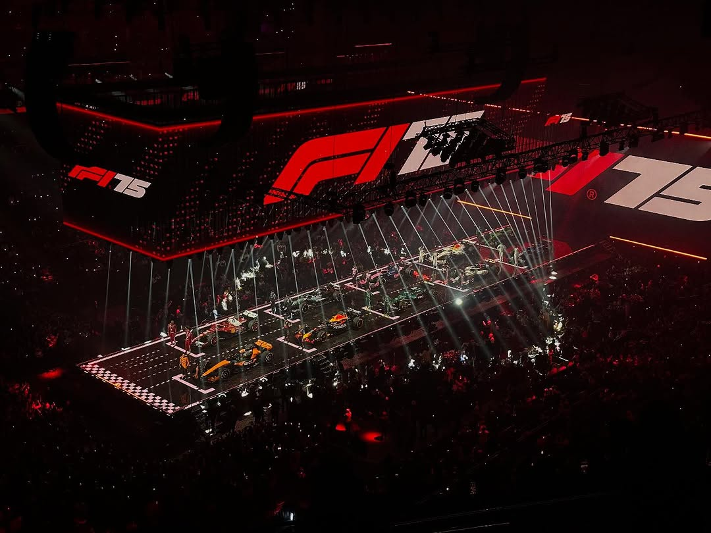
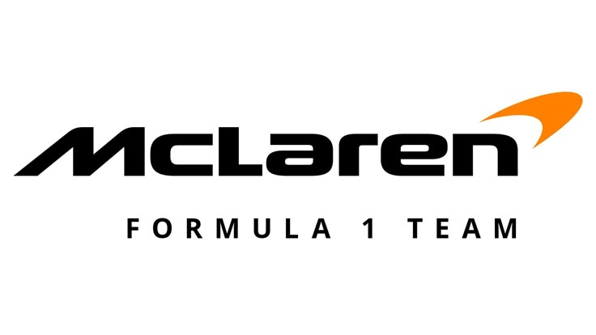
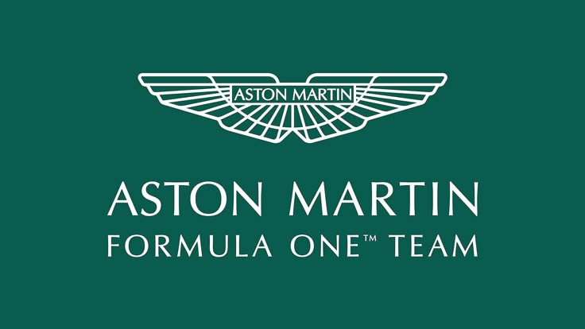
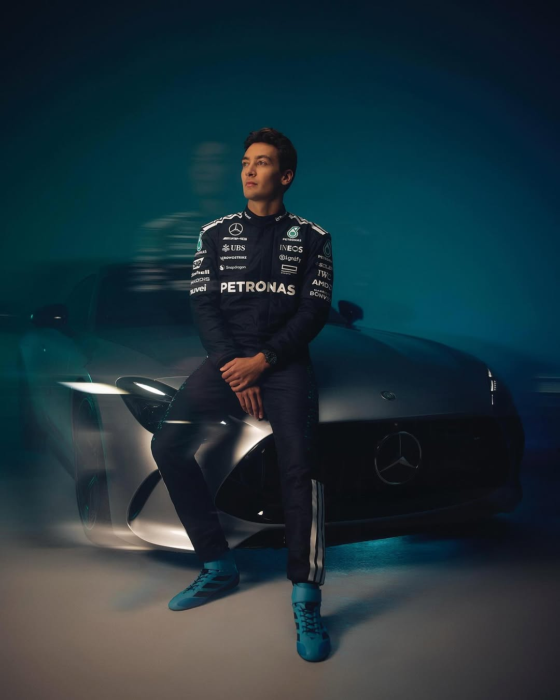
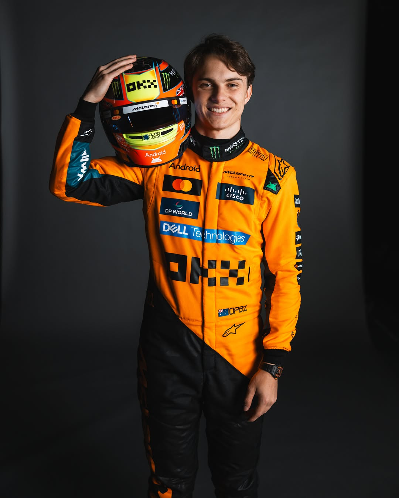

Musim Formula 1 2025 menjanjikan persaingan yang lebih ketat dengan
perubahan regulasi teknis yang signifikan. Total 24 balapan
dijadwalkan untuk musim 2025, termasuk Grand Prix baru di Madrid,
Spanyol yang menggantikan sirkuit Barcelona.
Setelah persaingan ketat di musim 2024, para penggemar menantikan
pertarungan antara juara bertahan dan pembalap-pembalap muda yang
semakin matang.
Perkembangan Revolusioner F1 2025

Musim 2025 menandai era baru dalam Formula 1 dengan perubahan
signifikan pada aerodinamika dan sistem propulsi. Penggunaan bahan
bakar berkelanjutan meningkat hingga 75%, menunjukkan komitmen F1
terhadap keberlanjutan lingkungan.
Beberapa perubahan teknis utama musim 2025 meliputi:
Sistem DRS yang telah dimodifikasi dengan zona aktivasi yang lebih
fleksibel
Baterai ERS baru dengan kapasitas penyimpanan energi 20% lebih
besar
Aturan aerodinamika yang lebih ketat untuk mengurangi efek "air
kotor" dan meningkatkan pertarungan di lintasan
Batasan berat minimum mobil yang diturunkan menjadi 790 kg
Kompetisi antar tim terlihat lebih ketat dari sebelumnya, dengan gap
performa antara empat tim teratas hanya berkisar 0.3 detik pada tes
pra-musim di Bahrain. Mercedes menunjukkan peningkatan signifikan
dibandingkan musim lalu, sementara McLaren terus membangun
momentumnya dari akhir musim 2024.
Peningkatan jumlah balapan sprint menjadi 10 event juga menambah
variabel strategi yang harus dipertimbangkan tim. Sistem poin baru
untuk balapan sprint memberikan insentif lebih besar bagi pembalap
untuk berjuang di setiap lap.
F1 Teams 2025
Red Bull Racing
Red Bull Racing telah mempertahankan dominasi mereka dengan
pengembangan terus-menerus pada paket aerodinamis. Tim dari
Milton Keynes ini memfokuskan pengembangan pada efisiensi
downforce dan stabilitas di tikungan berkeceatan tinggi.
Dengan kehadiran Adrian Newey yang masih memimpin departemen
teknis, Red Bull mengimplementasikan inovasi baru pada sistem
pendinginan dan packaging mesin yang lebih kompak. Peningkatan
reliabilitas menjadi fokus utama setelah beberapa kegagalan
teknis di musim 2024.
Mercedes-AMG Petronas
Mercedes telah melakukan perombakan besar pada konsep desain
mobil mereka, kembali ke filosofi 'zero-pod' yang
dimodifikasi. Setelah dua musim yang penuh tantangan, tim yang
berbasis di Brackley ini menunjukkan tanda-tanda kebangkitan
signifikan di akhir 2024.
Departemen teknis di bawah pimpinan James Allison berhasil
mengatasi masalah bouncing dan ketidakstabilan yang mengganggu
performa mereka. Pengembangan sistem suspensi baru dan
perbaikan pada unit tenaga memberikan optimisme bagi George
Russell dan pendatang baru Kimi Antonelli.
Scuderia Ferrari
Ferrari fokus pada peningkatan keandalan mesin dan efisiensi
energi untuk 2025. Kedatangan Lewis Hamilton membawa motivasi
dan pengalaman baru ke tim dari Maranello yang terus berjuang
untuk kembali ke puncak.
Di bawah kepemimpinan teknis Frederic Vasseur, Ferrari
melakukan restrukturisasi departemen aerodinamika dan merekrut
beberapa insinyur kunci dari tim rival. Peningkatan
pengelolaan ban dan performa di trek bertemperatur tinggi
menjadi prioritas utama setelah analisis kelemahan musim 2024.
McLaren F1 Team

McLaren melanjutkan perkembangan positif dengan memperkenalkan
inovasi baru pada sistem suspensi depan dan belakang. Tim dari
Woking ini berhasil mempertahankan momentum dari musim 2024
yang mengesankan.
Investasi besar-besaran pada infrastruktur, termasuk fasilitas
terowongan angin baru, mulai menunjukkan hasil dengan
peningkatan konsistensi performa di berbagai jenis sirkuit.
Duo muda Norris-Piastri dianggap sebagai salah satu lineup
terkuat di grid, dengan pengalaman pertarungan di posisi depan
yang semakin matang.
Aston Martin F1 Team

Aston Martin terus membangun proyek ambisius mereka dengan
pengembangan fasilitas baru di Silverstone. Rekrutmen teknis
agresif dan investasi dari Lawrence Stroll membawa tim ini
semakin dekat ke barisan depan.
Fernando Alonso yang masih menunjukkan performa mengesankan di
usianya yang semakin matang, memberikan umpan balik berharga
untuk pengembangan mobil. Fokus pada fleksibilitas setup dan
performa di berbagai kondisi cuaca menjadi prioritas setelah
inkonsistensi di musim sebelumnya.
Alpine F1 Team
Alpine melakukan restrukturisasi besar-besaran setelah musim
2024 yang sulit. Dengan manajemen baru dan filosofi teknis
yang diperbarui, tim Prancis ini mencoba untuk kembali ke
pertengahan grid.
Pengembangan unit tenaga Renault yang komprehensif dan desain
sasis yang lebih efisien memberikan harapan untuk peningkatan
performa. Kerjasama dengan beberapa pakar aerodinamika dari
dunia motorsport lain membawa perspektif segar pada
pengembangan mobil.
Pembalap F1 2025
Red Bull Racing
Max Verstappen
Belanda 🇳🇱
Nomor: 1
Juara dunia bertahan yang terus menunjukkan konsistensi dan
kecepatan luar biasa. Verstappen memasuki musim 2025 sebagai
favorit untuk memperpanjang dominasinya di F1.
Sergio Perez
Meksiko 🇲🇽
Nomor: 11
Setelah kontrak baru pada pertengahan 2024, Perez terus menjadi
pendukung solid bagi tim dengan fokus pada konsistensi dan
pengumpulan poin untuk kejuaraan konstruktor.
Mercedes-AMG Petronas

George Russell
Inggris 🇬🇧
Nomor: 63
Memasuki musim keempat bersama Mercedes, Russell kini mengambil
peran pemimpin tim. Kualifikasi yang mengesankan dan performa
balapan yang konsisten menjadi karakter utamanya.
Andrea Kimi Antonelli
Italia 🇮🇹
Nomor: 87
Rookie berbakat dari program junior Mercedes yang dipromosikan
setelah performa mengesankan di Formula 2. Antonelli dianggap
sebagai salah satu talenta terbesar generasi baru.
Scuderia Ferrari
Charles Leclerc
Monako 🇲🇨
Nomor: 16
Memasuki tahun ketujuh bersama Ferrari, Leclerc terus
menunjukkan kecepatan luar biasa terutama di kualifikasi.
Kontrak jangka panjang menegaskan posisinya sebagai salah satu
pilar tim.
Lewis Hamilton
Inggris 🇬🇧
Nomor: 44
Transfer sensasional ke Ferrari membawa perubahan besar setelah
lebih dari satu dekade bersama Mercedes. Hamilton bertekad
membuktikan bahwa di usia 40 tahun, ia masih mampu berjuang
untuk gelar juara dunia kedelapan.
McLaren F1 Team
Lando Norris
Inggris 🇬🇧
Nomor: 4
Setelah meraih kemenangan pertama di F1 pada 2024, Norris
semakin percaya diri dan konsisten. Kemitraan dengan Piastri
menciptakan salah satu lineup termuda dan paling berbakat di
grid.

Oscar Piastri
Australia 🇦🇺
Nomor: 81
Musim rookie yang mengesankan berlanjut dengan perkembangan
pesat di tahun kedua. Piastri menunjukkan kemampuan adaptasi
cepat dan racecraft yang matang melebihi usianya.